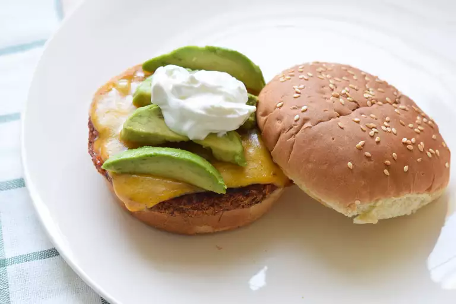

Mexican Bean Burgers Recipe
Mexican Bean Burgers
Home

Recipe by Anderval
Description
These Mexican Bean Burgers are a flavorful and healthy alternative to traditional beef burgers, made with black beans, corn, and spices.
Ingredients
- 1 carrot, sliced
- 1(15 ounce) can kidney beans
- 1/2 cup chopped green bell pepper
- 1/2 cup chopped onion
- 2 cups salsa
- 1 cup dried bread crumbs
- 1/2 cup whole wheat flour
- 1/2 teaspoon ground black pepper
- salt to taste
- 1 pinch chili powder
Steps
- Place carrot into a bowl, and fill with 1/4 inch of water. Cover with plastic wrap, and cook in the microwave for 2 minutes, or until soft. Drain.
- Mash beans and steamed carrot in a large bowl. Mix in green pepper, onion, salsa, bread crumbs, and whole wheat flour. Season with salt,black pepper and chilli powder. Add flour to create a firmer mixture, or more salsa if the mixture is too stiff. Form mixture into 8 patties, and place on a greased baking sheet.
- Heat a large skillet over medium-high heat, and coat with cooking spray. Fry the patties for about 8 minutes on each side, or until brown and firm.